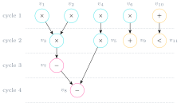

Definition
A system at the architectural level is a datapath (functional units, registers, multiplexers, buses) driven by a control unit (an FSM) through control signals, which reads back status signals (comparisons, flags).
A sequencing graph : one vertex per operation (with its type: multiply, add, compare), an edge when uses the result of , plus a source and a sink no-op. It is a DAG for the body of a loop.
Architectural synthesis answers:
- scheduling: in which cycle does each operation start? (latency)
- allocation: how many units of each type?
- binding: which unit executes each operation, which register holds each value? (area)
Example
The inner loop of a differential-equation solver,
has 6 multiplications, 2 subtractions, 2 additions and a comparison :| op | computes | op | computes |
|---|---|---|---|
| v1 | 3 · x | v7 | u − v3 |
| v2 | u · dx | v8 | v7 − v5 (= u1) |
| v3 | v1 · v2 | v9 | y + v6 (= y1) |
| v4 | 3 · y | v10 | x + dx (= x1) |
| v5 | v4 · dx | v11 | v10 < a |
| v6 | u · dx |
The longest chain v1 → v3 → v7 → v8 has four operations: with unit delays no schedule is shorter than 4 cycles.
Picture

Multiplications (cyan) form the long chains; the subtractions wait for them.
Intuition
The graph shows what could run in parallel; scheduling decides what does, given how much hardware is available.
Pitfall
The graph exposes only the parallelism of the source as written; rewriting the algorithm (tree height reduction, loop unrolling) often matters more than the scheduler.